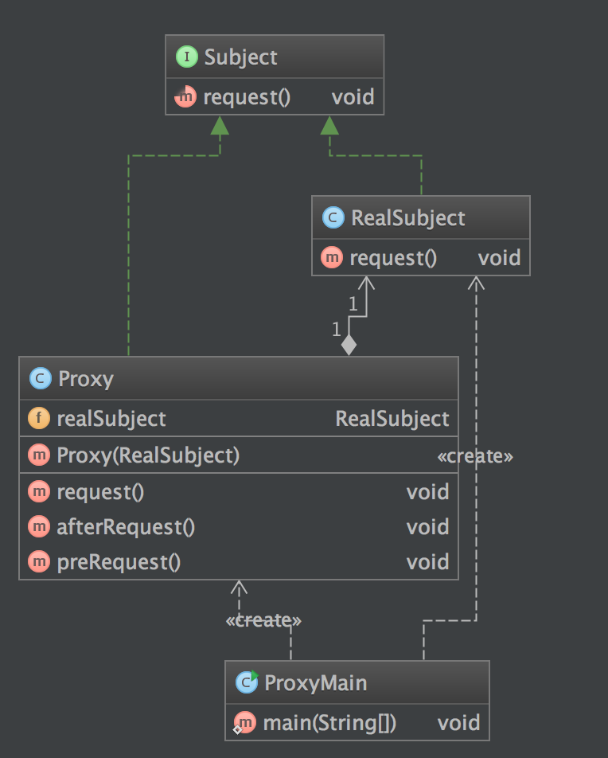

定义
代理模式(Proxy Pattern) ：给某一个对象提供一个代 理，并由代理对象控制对原对象的引用。
使用场景
- 一个系统不应当依赖于产品类实例如何被创建、组合和表达的细节，这对于所有类型的工厂模式都是重要的。
- 系统中有多于一个的产品族，而每次只使用其中某一产品族。
- 属于同一个产品族的产品将在一起使用，这一约束必须在系统的设计中体现出来。
- 系统提供一个产品类的库，所有的产品以同样的接口出现，从而使客户端不依赖于具体实现。
UML 图

Subject: 抽象主题角色
Proxy: 代理主题角色
RealSubject: 真实主题角色
简单实现
例子
public interface Subject {
void request();
}
public class RealSubject implements Subject {
@Override
public void request() {
System.out.println("RealSubject request");
}
}
public class Proxy implements Subject {
private RealSubject realSubject;
public Proxy(RealSubject realSubject) {
this.realSubject = realSubject;
}
@Override
public void request() {
preRequest();
realSubject.request();
afterRequest();
}
private void afterRequest() {
System.out.println("Proxy afterRequest");
}
private void preRequest() {
System.out.println("Proxy preRequest");
}
}
客户端调用
public class RealSubject implements Subject {
@Override
public void request() {
System.out.println("RealSubject request");
}
}
结果
ProxyMain RUNNING
Proxy preRequest
RealSubject request
Proxy afterRequest
类图

优缺点
- 优点
- 代理模式能够协调调用者和被调用者，在一定程度上降低了系 统的耦合度。
- 远程代理使得客户端可以访问在远程机器上的对象，远程机器 可能具有更好的计算性能与处理速度，可以快速响应并处理客户端请求。
- 虚拟代理通过使用一个小对象来代表一个大对象，可以减少系 统资源的消耗，对系统进行优化并提高运行速度。
- 保护代理可以控制对真实对象的使用权限。
- 缺点
- 由于在客户端和真实主题之间增加了代理对象，因此 有些类型的代理模式可能会造成请求的处理速度变慢。
- 实现代理模式需要额外的工作，有些代理模式的实现 非常复杂。
## 总结
- 代理模式包含三个角色：抽象主题角色声明了真实主题和代理主题的共同接口；代理主题角色内部包含对真实主题的引用，从而可以在任何时候操作真实主题对象 真实主题角色定义了代理角色所代表的真实对象，在真实主题角色中实现了真实的业务操作，客户端可以通过代理主题角色间接调用真实主题角色中定义的方法。
- 如果需要创建一个资源消耗较大的对象，先创建一个消耗相对较小的对象来表示，真实对象只在需要时才会被真正创建，这个小对象称为虚拟代理。虚拟代理通过使用一个小对象来代表一个大对象，可以减少系统资源的消耗，对系统进行优化并提高运行速度。
- 保护代理可以控制对一个对象的访问，可以给不同的用户提供不同级别的使用权限。
参考
http://design-patterns.readthedocs.org/zh_CN/latest/structural_patterns/proxy.html
『head first 设计模式』